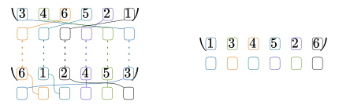

1
2
3
4
5
6
19 janvier 2023
Formellement, une permutation est une bijection d’un ensemble dans lui-même. Notamment, une permutation de \(n\) éléments est une bijection d’un ensemble de cardinal \(n\) dans lui-même.
On parle généralement des permutations sur un intervalle entier \([\![1; n]\!]\)
Soit \(\sigma \in \mathfrak{S}_{n}\) une permutation, on note :
\(s = \begin{pmatrix}1&2&\cdots&i&\cdots&n\\ \sigma(1)&\sigma(2)&\cdots&\sigma(i)&\cdots&\sigma(n)\end{pmatrix}\)
Visualisation d’une permutation :
On voit que les nombres représentent bien la permutation (la ligne du haut est l’état “avant”, et la ligne du bas, l’état “après”).
On note \(\mathfrak{S}_{n}\) l’ensemble des permutations sur \([\![1;n]\!]\)
On appelle permutation identité la permutation qui ne change pas l’ordre des éléments, c’est-à-dire que \(id = \begin{pmatrix}1&2&3&\cdots&n\\1&2&3&\cdots&n\end{pmatrix}\).
Formellement, la permutation identité est une fonction identité.
Soient \((\sigma, \varphi) \in (\mathfrak{S}_{n})^{2}\) deux permutations
On note \(\sigma \circ \varphi\) la composée de \(\sigma\) et \(\varphi\). C’est le résultat de l’application, d’abord de \(\varphi\), puis de \(\sigma\) (on va de droite à gauche).
Formellement, c’est simplement une composition de fonctions.
Pour calculer une composition de permutation à partir des représentations en tableau, il suffit de faire comme suit :

On note également \(\sigma^{n}\) la composée de \(\sigma\) avec elle-même, \(n\) fois : \(\sigma^{n} = \underbrace{\sigma \circ \sigma \circ \sigma \circ \cdots \circ \sigma}_{n \text{ fois}}\) - \(\sigma^{0} = id\) - \(\sigma^{1} = \sigma\) - \(\vdots\) - \(\sigma^{n} = \sigma \circ \sigma^{n-1}\)
Soit \(\sigma \in \mathfrak{S}_{n}\) un permutation.
On note \(\sigma ^{-1}\) la permutation inverse de \(\sigma\), la permutation telle que \(\sigma \circ \sigma ^{-1} = \sigma ^{-1} \circ \sigma = id\).
La notation \(\sigma ^{-1}\) est logique pour plusieurs raisons : - c’est une notation que l’on retrouve pour la réciproque d’une fonction (d’une bijection). Justement, la permutation inverse correspond à la réciproque de la fonction \(\sigma\). - c’est une notation logique, étant donné la définition de \(\sigma^{n}\) que l’on a donnée plus haut (si on veut pouvoir continuer pour des \(n\) négatifs)